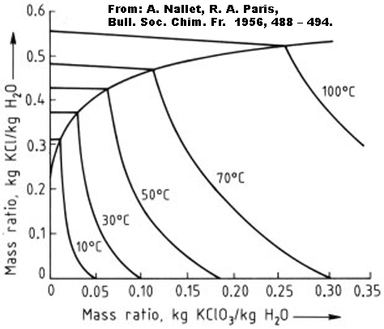
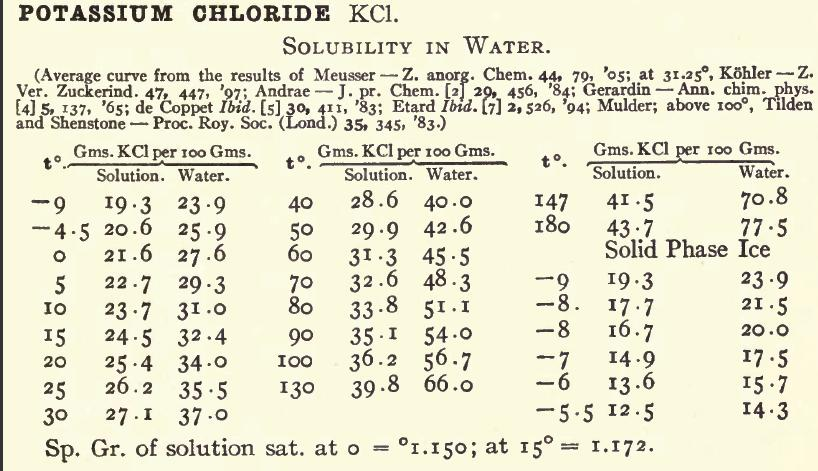

![[Graph of the solubility of K Chloride, Chlorate and Perchlorate]](_img/ksolubil.gif)
Potassium Chlorate is not hygroscopic
and has no known hydrates.
Potassium Chlorate can be made similarly to Sodium
Chlorate. Since Potassium Chlorate is much less soluble than Na Chlorate the K
Chlorate will crystallise out of the cell electrolyte as you run the cell. If you
are using carbons as Anodes the Graphite will be difficult to separate out of
the solid product and you will have to re-dissolve it in order to filter out the
Graphite. Using pH control will greatly help here as there will be little Graphite sludge to filter out.
If using Lead Dioxide there will be a small amount of brown Lead
Dioxide on the bottom of the cell with the solid Chlorate and if you wish to
remove it you will have to re dissolve the Chlorate and filter. This will take
a lot of water as the K Chlorate is not very soluble and if you try to use very hot
water you will get the K Chlorate crystallising out in the filter.
Potassium
Chlorate is by far the most popular Chlorate for the Amateur to make as it is dangerous to use Sodium Chlorate for Pyro stuff.
If you keep your cell clean, use a MMO (DSA), or Pt Anodes and a non corroding
Cathode (proper type of SS or Ti) you will be able to harvest almost pure K
Chlorate from your cell at regular intervals. It should be given a wash
using cold water to get rid of any KCl that is clinging to it. Washings should be returned to the cell so that nothing is wasted.
KCl
can be obtained as a fertilizer, it is called Muriate of Potash. It may have
49% K written on the bag. (100% pure KCl will have 52.44% K). In the USA where the %K is stated is a different way (as %K2O !) there may be 60% K2O written on the bag. 60% K2O = 49.8% K = 95% KCl (by weight). You may wish to purify the fertilizer grade by recrystilizion.
Another possible source of KCl
is with the people who sell equipment for softening water. Sodium Chloride is
usually used in the devices but some people object to having any Sodium ion
in their drinking water so they need to use Potassium Chloride. This KCl will be pure.
'Lo-Salt' or 'Lite-Salt are products containing both NaCl and KCl. These salts can be seperated but this is lots in work for the Amateur. You will be better seperation at the Chlorate stage where solubilities are alot different. If you want to seperate NaCl and KCl you can start here.
At the end of the run you will have a ppt of Chlorate on the bottom of the
cell.
Remove the Chlorate, and add 0.61 grams KCl for every gram K Chlorate
removed from cell and top up with water if necessary. You will now be back
(approx.) to the conditions at the start of the run. The run time will be the
same as it was the first time. You will probably have to recrystallize your crop
of K Chlorate to clean it up from Lead Dioxide or Graphite. If using MMO (DSA) and a
non corroding Cathode you can use after a single wash to remove Chloride.

See also Large scale production of K Chlorate using Lead Dioxide Anode (pdf, 97k).
The amount of KCl to add to the Sodium Chlorate will depend on the amount of Sodium Chlorate that you have in solution. You need the same amount of moles of KCl as there are moles NaClO3 if you want to get as much KClO3 as possible. For every gram NaClO3 you will need 74.5/106.5 = 0.699 grams KCl. It is difficult to know how much NaClO3 you have in the solution if you have not started with solid NaClO3 and dissolved it in the water.
The whole thing can be simplified if you are going to make more Na Chlorate in order to make more K Chlorate. If you simply estimate the amount of Sodium Chlorate in the solution and add the appropriate amount of KCl. You can do this when the solution is cold. Keep adding the KCl slowly with stirring until you are getting no more precipitation of KClO3. Then stop adding the KCl and filter out the KClO3. You can then start up the Sodium Chlorate cell again by using the solution that you filtered. There will now be enough Sodium Chloride in the cell for electrolysed to begin. There will be some K Chlorate dissolved in the cell but it will not matter. You will get it out the next time around. The run time will be similar to the first time around, or slightly shorter (5 - 10%).
| Some useful data | ||||
|---|---|---|---|---|
| KCl | KClO3 | NaCl | NaClO3 | |
| Molecular weight | 74.5 | 122.5 | 58.5 | 106.5 |

Graph above shows the solubility of some K Compounds.
See Solubility tables for a collection of data regarding solubility’s of K Chlorate + K Chloride and K Chlorate + Na Chloride.
Some patents on K Chlorate production are, US 4339312 and US 2287061
HIT THE BACK BUTTON ON YOUR BROWSER